楷娜官網設計規劃書
本文件說明楷娜官網提案原型「為什麼這樣設計、每個部件做什麼、帶來什麼功能優勢」。每個項目都有編號（例如 C-05），討論與修改時直接引用編號即可。
一頁總覽
分析來源與限制
設計建立在先前的品牌行銷分析之上。這裡說清楚分析怎麼做、哪些是推論。
| 分析方法 | 做了什麼 | 用在網站哪裡 |
|---|---|---|
| 受眾畫像師 | 依其流程產出市場分群與兩張 Persona：第一次怕踩雷的小昀、定期保養的熟客 Joyce | C-06 陪診的一天、C-08 熟客一鍵再約、C-09 常見問題 |
| 社群內容策略師 | 以 12 維度選出 A11 職人視角、A10 專業知識、A5 受眾痛點三個切角，與部位 SEO 標題 | C-05 部位地圖（衛教卡）、C-09 常見問題 |
| 品牌專屬文案師 | 依簡介推論品牌語氣：懂行的姊妹，不是業務；列出必用詞與禁用詞 | 全站文案口吻、C-02 標語 |
| 公關風險偵測 | 紅藍軍模擬，標出「權威」「抽成」「上海手術」等高風險用語 | C-11 合規聲明、S-2 合規對照 |
| 公開資料調研 | IG 三帳號公開首頁、衛福部醫療廣告與招攬相關公告與報導 | G-1、S-2 |
全局視角：先看整片森林
在決定任何一個按鈕長什麼樣子之前，先回答三個問題：官網要解決什麼？它在楷娜的整個生態裡扮演什麼角色？客人從哪裡來、要往哪裡去？
G-1為什麼需要官網：現況與未來
G-2官網在生態圈的角色
| 觸點 | 擅長 | 不擅長 |
|---|---|---|
| IG | 人味、日常、即時、陪診碎片 | 被 Google 搜到、完整說明、排程 |
| 官網 | 完整說明服務、部位衛教、可查證資訊、自助預約 | 即時互動 |
| LINE | 一對一對話、推播提醒 | 展示、被新客找到 |
| 診所 | 醫療評估與處置 | 陪伴、事前規劃 |
G-3受眾與使用旅程
她要的是：先看懂，再有人陪著問。
關鍵句：「第一次，不用自己一個人去問醫師。」
她要的是：三秒約好、前一天被提醒。
關鍵句：「你的固定時段，我們幫你記著。」
G-4五個設計原則
G-5頁面架構與情緒曲線
為什麼是單頁長捲動？ 主要流量來自 IG 的手機用戶，習慣往下滑，而不是點選單換頁。單頁讓故事不中斷，也讓「預約」永遠在下一次滑動就看得到。未來部位衛教文章（SEO）可另開子頁，不影響主頁敘事。
設計系統：讓每個部件說同一種語言
部件規劃之前，先定規則。這套規則來自貝果提供的參考圖，加上楷娜自己的品牌概念。
D-1核心概念：圓
為什麼用圓
- 來自貝果的參考圖：參考圖的按鈕是圓角膠囊，標題外圍有細線橢圓和星芒，光暈也是圓形。延續它，客人一眼就認得出是貝果的品牌。
- 呼應楷娜的服務：「規劃」是完整的一圈，「陪診」是團隊像軌道一樣環繞在客人身邊，不擋在前面。
- 醫美語境的溫和感：沒有尖角、沒有強對比色，降低醫療場景的緊張感。
應用在哪裡
首屏圓形主圖與三條軌道、三入口的橢圓標籤、服務的三顆光球、部位地圖的聚焦光圈、陪診時鐘圓窗、主理人圓形照片、預約的圓形選項、FAQ 圓形展開鈕、後台的數據圓環。
D-2色彩
為什麼：色系直接取自參考圖。刻意不用粉紅、玫瑰色這類醫美常見色，讓楷娜看起來更沉穩、更像「顧問」而不是「促銷」。LINE 綠只出現在 LINE 相關元素上，讓客人一看就知道「這裡會開 LINE」。
D-3字體
Noto Serif TC・標題・情緒句
Cormorant Garamond・英文副標（同參考圖）
Noto Sans TC・寬字距標籤與按鈕（同參考圖）
為什麼：中文襯線體帶來雜誌感與溫度；英文 Cormorant 與參考圖的 “Aesthetic Portfolio” 同一路線；寬字距的按鈕文字直接延續參考圖的膠囊按鈕。三種字體全部來自 Google Fonts，免費可商用。
D-4圖像與 Codex 主視覺
5 張主視覺由 Codex 生成，提示詞固定同一段風格後綴：灰褐、沙色、象牙白，柔焦光暈、稜鏡光斑、水平光線、底片顆粒。
- 石膏像而不是真人：避免「看起來像療效示範」，也不會有肖像權問題。
- 沒有術前術後：所有圖像都是氛圍，不是效果。
- 預留文字空間：每張圖的提示詞都寫明哪一側要留白給文字。

D-5動態原則
| 動態 | 在哪裡 | 為什麼 |
|---|---|---|
| 即時渲染光場（WebGL） | 首屏背景 | 光球緩慢漂移並跟著滑鼠，重現參考圖的光暈，讓頁面「活著」但不吵。 |
| 軌道慢速旋轉、星芒閃爍 | 全站圓形元素 | 60–120 秒轉一圈，幾乎感覺不到，只留下「有人在環繞」的氛圍。 |
| 標題逐字浮現 | 首屏、主理人引言 | 像有人慢慢對你說話，配合「不急」的品牌節奏。 |
| 線條臉譜逐筆畫出 | C-05 部位地圖 | 把注意力引到臉上，再引到可點的部位。 |
| 時間軸隨捲動填滿、時鐘切換 | C-06 陪診的一天 | 讓客人「走過」一次陪診的時間流。 |
| 游標柔光、按鈕掃光與吸附 | 桌機 | 增加精緻感；手機上自動關閉。 |
節制規則：所有動態都用同一條緩出曲線，不彈跳、不閃爍；系統開啟「減少動態」時全部停用；畫面不在視窗內時光場暫停，省電也不拖慢手機。
部件規劃
每個部件都用同一個格式說明：目的、為什麼這樣設計、功能優勢、需要的素材、可以討論的地方。截圖為提案原型實際畫面。
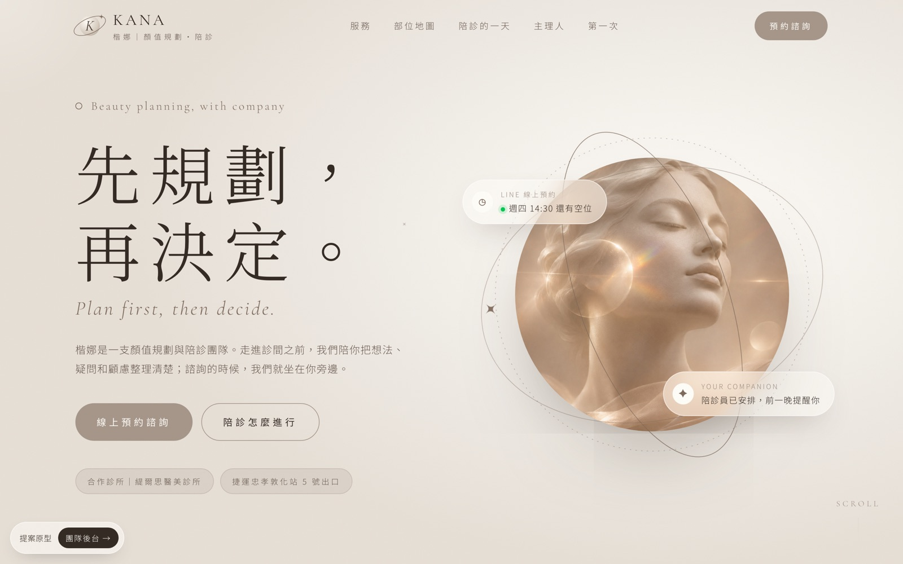
C-01導覽列
任何時候都能一鍵預約，也能跳到想看的段落。
Logo 是光球加一條軌道與星芒，把 D-1 的概念縮成一個符號。右側「預約諮詢」是全站唯一常駐的實心按鈕。捲動後才出現毛玻璃底，首屏保持乾淨。
- 預約入口永遠在拇指範圍內
- 選單用「服務／部位地圖／陪診的一天／主理人／第一次」等客人的語言，不用「關於我們」這類公司語言
正式 Logo（目前是提案示意符號）。
- Logo 要沿用示意還是另外設計？
- 手機版要不要加漢堡選單？（目前只留預約按鈕）
C-02首屏主視覺
三秒內讓客人知道：楷娜是誰、和一般醫美有什麼不同、下一步做什麼。
標語「先規劃，再決定。」直接回應第一次的人最大的恐懼：被推銷。右側的圓形主圖加上三條軌道，是整個品牌概念的第一次完整呈現。兩張玻璃資訊卡（「週四 14:30 還有空位」「陪診員已安排」）在第一眼就預告了預約與陪診兩個核心功能。
- 主要、次要兩個按鈕：準備好的人直接預約，還在猶豫的人去看陪診流程
- 底部的合作診所與捷運站標籤，先建立「可查證」的信任
- 背景光場即時渲染，不用載入大型影片檔
主視覺圖（已由 Codex 生成）；可替換成真實拍攝。
- 標語是否採用「先規劃，再決定。」
- 資訊卡要接真實空位資料，還是維持氛圍示意？
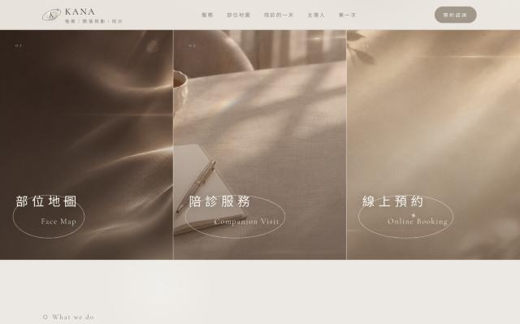
C-03三個入口
給不想從頭看完的人三條捷徑：部位地圖、陪診服務、線上預約。
這是對貝果參考圖下半部（觀看作品集／追蹤官方 IG／線上預約）的致敬：三格滿版質感圖、寬字距中文、英文副標、橢圓與星芒。貝果會在第一頁就看到她熟悉的語彙，提案接受度更高。
- 滑鼠移上去時背景微放大、軌道微轉，提示可點
- 手機上自動變成上下三格
三張質感圖（已生成）。
- 三個入口是否改成參考圖原本的「作品集／IG／預約」？（作品集涉及對比照，需特別注意合規）
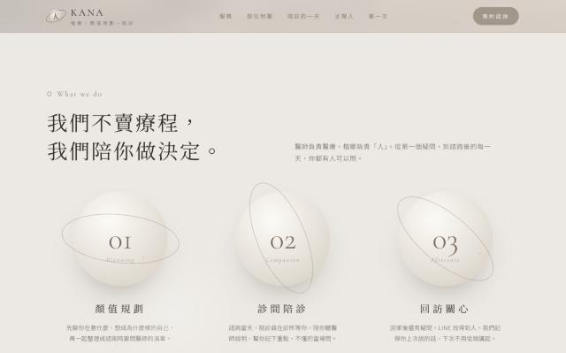
C-04服務介紹：三顆光球
一句話說清楚楷娜做什麼、不做什麼。
標題「我們不賣療程，我們陪你做決定。」同時是定位宣言和合規宣言。三個服務（顏值規劃、診間陪診、回訪關心）剛好對應客人的「之前、當天、之後」，用三顆光球呈現，每顆的軌道角度不同，象徵每個階段的陪伴方式不同。
- 把「陪診」從 IG 精選動態裡的碎片，變成正式、可說明的服務
- 每個服務列出三個具體動作，讓客人知道實際會發生什麼
無需額外素材。
- 陪診是否收費？是否所有客人都能申請？
- 三個服務名稱是否符合團隊內部的叫法
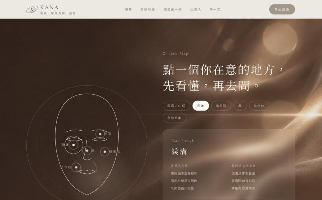
C-05部位地圖（互動）
讓還說不清楚自己要什麼的人，點一下就看懂，並帶著問題去諮詢。
楷娜的精選動態本來就是依部位分類（眼窩、淚溝、蘋果肌、法令紋、鼻、全臉），客人也習慣用部位描述困擾。線條臉譜比真人照片中性、不帶療效暗示。每張卡片只寫「常見的在意、醫師評估時會看什麼、諮詢時可以這樣問」，是衛教，不是推療程。
- 點臉上的點或下方標籤都可以切換；聚焦光圈會移到該部位
- 卡片底部「預約這個部位的諮詢」會把部位自動帶入預約流程第一步
- 每個部位未來可延伸成一篇 SEO 衛教文章（社群內容策略師的 A10 切角）
- 深色背景在整頁淺色中形成節奏變化，讓這段成為記憶點
每個部位的衛教文字需由診所醫師審閱並具名。
- 部位清單是否要增減（例如下巴、額頭、電音波）
- 審閱醫師願不願意具名
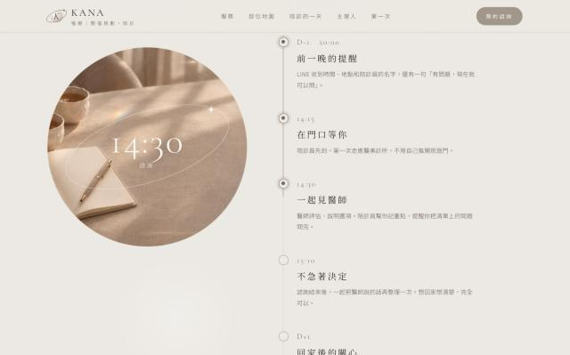
C-06陪診的一天
接住旅程中最低的那個點：「我一個人不敢去」。
直接來自受眾畫像師的 Persona「小昀」。與其說「我們提供陪診服務」，不如讓她「走過」一次：前一晚提醒、門口等你、一起見醫師、不急著決定、回家後關心、下次記得你。左側圓窗裡的大時鐘會隨捲動切換，是整頁最有電影感的段落。
- 六個時刻中有三個（提醒、回訪、記得你）是預約系統自動完成的，間接展示系統價值
- 捲動時時間軸逐點亮起，閱讀有進度感
可替換為真實陪診照片（需客人同意，或只拍環境不拍臉）。
- 實際陪診流程與時間點是否符合現況
- 陪診員是否露出名字與照片
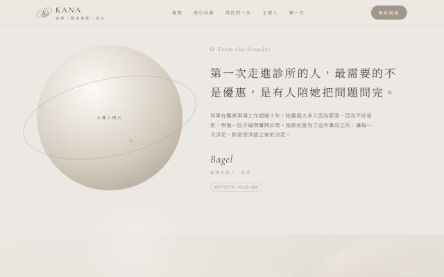
C-07主理人
把 IG 上 2.2 萬人認識的「貝果」，接到「楷娜」這個品牌上。
策略分析的核心發現：真正的品牌資產是貝果本人。這區放她的一句話和成立楷娜的原因，讓從貝果 IG 來的人感到熟悉，也讓新客認識她。照片用圓框加軌道，和全站一致。
- 建立「人」的信任，彌補官網冷冰冰的感覺
- 未來可加「追蹤貝果 IG」連結，形成雙向導流
必要：貝果本人照片；她親口確認的引言。
- 引言內容（目前為提案示意）
- 「十年醫美經驗」是否要放，以及怎麼寫才不構成誇大宣稱
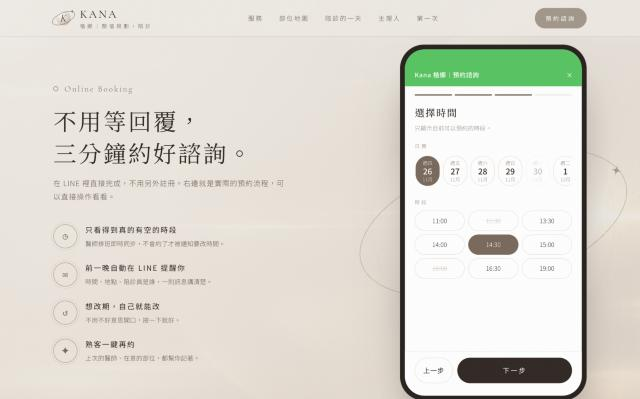
C-08線上預約（核心功能）
貝果最重視的功能：讓客人自己三分鐘約好，不用等人回 LINE。
直接在官網上放一支可以操作的手機，示範「在 LINE 裡預約」的真實流程，比任何文字說明都有說服力。四步驟依序是：想聊的部位 → 門診與醫師 → 日期時段 → 稱呼、手機、陪診與個資同意。預約的是「諮詢門診」，不是療程。
- LINE 原生：用 LINE LIFF 開在 LINE 裡，免註冊、免密碼
- 只顯示真的有空的時段：與醫師排班同步
- 自動提醒：前一晚 20:00 LINE 推播，降低爽約
- 自助改期取消：確認訊息裡直接按
- 熟客一鍵再約：帶入上次醫師與部位（二期）
- 少收資料：只收稱呼與手機，健康資料留在診所
- 從 C-05 點進來會自動帶入部位
醫師名單與排班規則、諮詢時長、可預約時段、LINE 官方帳號管理權限。
- 是否收訂金（建議先不收）
- 改期、取消的截止時間
- 一個時段可約幾人
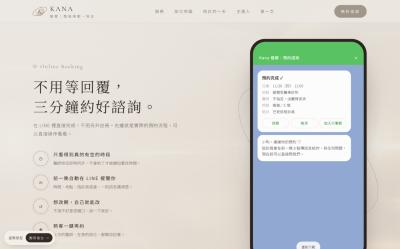
↖ 預約完成畫面：模擬 LINE 確認訊息，含改期、取消、加入行事曆三個按鈕，第二則訊息以陪診員口吻提醒。
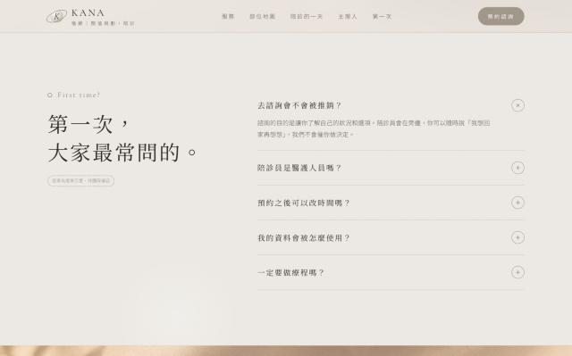
C-09常見問題
在按下預約前，消除最後的疑慮。
五個問題都來自 Persona 的痛點：會不會被推銷、陪診員是不是醫護、能不能改期、資料怎麼用、一定要做療程嗎。第二題同時是合規說明：陪診員不做醫療判斷。
- 預設展開第一題，客人不用點也能看到最關鍵的回答
- 未來可加入 FAQ 結構化資料，讓 Google 搜尋結果直接顯示
團隊確認每題答案。
- LINE 上最常被問的前五題是什麼？應以實際紀錄為準
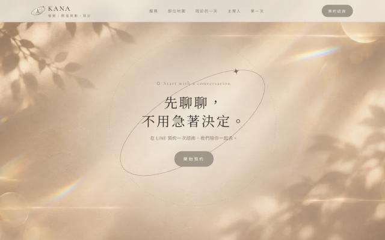
C-10結尾邀請
給看完全部、還沒行動的人最後一次溫和的邀請。
「先聊聊，不用急著決定。」降低行動門檻。背景是葉影光線牆面，象徵新的開始；標題被一個大圓與軌道框住，呼應首屏，讓整頁首尾相連成一個圓。
- 不放任何優惠或倒數，避免醫療法第 61 條的招攬疑慮
無。
- 是否加一個「先加 LINE 好友」的次要選項，給還不想預約的人
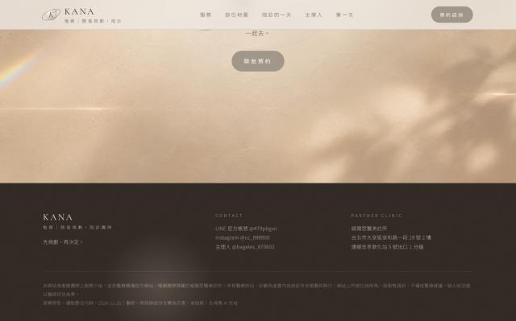
C-11頁尾與合規聲明
提供聯繫資訊與合作診所資訊，並清楚聲明網站性質。
依先前確認的定位：團隊隸屬於診所，但網站是團隊自己的，不能被誤認為診所官網。頁尾固定寫明：本網站為楷娜團隊服務介紹，並非醫療機構官網；醫療評估與處置由緹爾思醫美診所合格醫師執行；部位說明為一般衛教。
- 降低醫療廣告認定風險（仍需律師確認）
- 診所地址與交通讓客人可以查證
隱私權政策、個資告知全文（需律師審閱）、服務時間。
- 聲明文字是否需要診所端同意
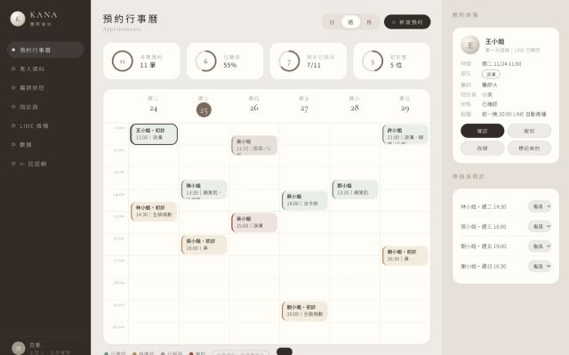
C-12團隊預約後台
把貝果和團隊從 LINE 人工排程中解放出來。
預約系統真正的價值在後台：前台再漂亮，如果團隊還是要手動整理，就沒有解決貝果的問題。後台沿用同一套色彩與圓形元素，讓團隊每天用起來也舒服。
- 週行事曆，狀態以顏色區分：已確認、待確認、已報到、爽約
- 點預約看詳情，一鍵確認、報到、改期、標記爽約
- 「待指派陪診」清單，選人後自動通知客人
- 上方四個數據圓環：本週預約、確認率、陪診指派率、初診客
- 手動新增：從 LINE 對話來的客人也能補登
- 角色權限：主理人看全部，陪診員只看自己被指派的
團隊成員名單與角色。
- 需要日檢視、月檢視嗎？（原型先示範週檢視）
- 要不要和診所既有掛號系統串接
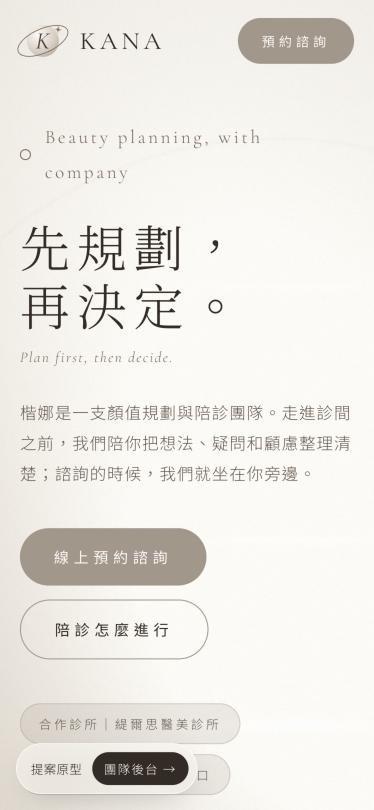
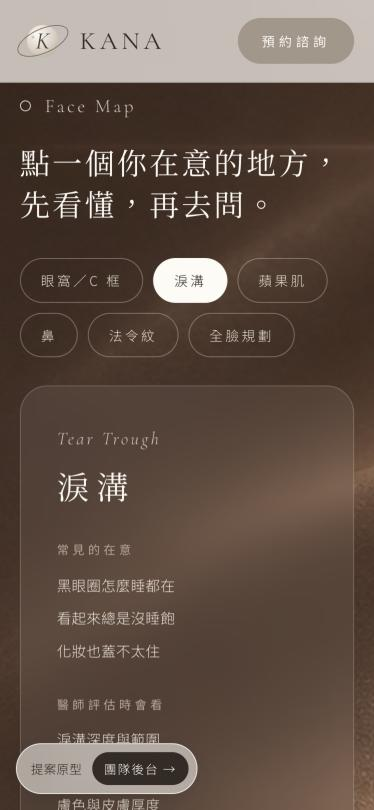
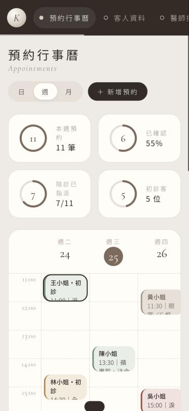
C-13手機版
主要客人從 IG 進來，用的是手機。
手機版不是縮小的桌機版：首屏改成上下排列，三入口改成直向三格，部位地圖的卡片放在臉譜下方，預約手機框拿掉直接變成全寬流程。後台在手機上側欄變成橫向捲動標籤，行事曆可橫向滑動，因為貝果多半用手機作業。
- 已在 375px 寬度檢查，無橫向捲動
- 手機上關閉游標光暈與按鈕吸附效果，省電也不干擾操作
- 手機上是否加一個固定在底部的「預約」按鈕
系統與執行
S-1預約系統架構
| 比較 | 現況：LINE 人工 | 導入後 |
|---|---|---|
| 客人約一次要多久 | 傳訊息後等回覆，時間不定 | 自助完成，約三分鐘 |
| 排程 | 靠記憶與聊天紀錄 | 後台行事曆集中管理 |
| 提醒 | 人工傳或沒傳 | 自動推播 |
| 熟客資料 | 散在對話裡 | 客人資料卡：偏好醫師、部位、歷史 |
| 陪診指派 | 口頭分配 | 後台指派並自動通知客人 |
| 數據 | 沒有 | 預約量、確認率、爽約率、熱門部位 |
導入後的效益需上線後以實際數據驗證；目前尚無現況基準數字（每月詢問量、爽約率），需向貝果取得。
S-2合規設計對照
| 風險 | 相關規範 | 網站上的做法 |
|---|---|---|
| 非醫療機構刊登醫療廣告 | 醫療法第 84、87 條 | 網站定位為團隊服務介紹；醫療內容歸屬診所醫師；頁尾固定聲明（C-11） |
| 不正當招攬 | 醫療法第 61 條、衛福部公告禁止態樣 | 不放價格、折扣、贈品、倒數；預約的是諮詢，不是療程（C-08、C-10） |
| 誇大或療效暗示 | 醫療廣告相關規範 | 不用「權威」「保證」；不放術前術後對比；主視覺用石膏像（D-4） |
| 個資與特種個資 | 個人資料保護法 | 預約只收稱呼與手機；健康資料留在診所；個資告知必勾（C-08） |
| 跨境醫療仲介 | 2025/12 衛福部公開表示違法 | 上海線與公關抽成完全不出現在網站 |
S-3技術、效能與無障礙
S-4時程
| 階段 | 內容 | 估計 |
|---|---|---|
| 1 | 需求訪談、流程與文案定稿 | 1 週 |
| 2 | 設計定稿（以本原型為基礎修改） | 1–2 週 |
| 3 | 開發：官網、LIFF 預約、後台、推播 | 4–5 週 |
| 4 | 團隊內測、修正、上線 | 1–2 週 |
時程與範圍為建議案・未拍板
待討論與修改清單
討論時請引用編號。勾選或備註後回傳，我們依此修改原型。
| 編號 | 問題 | 影響部件 | 優先 |
|---|---|---|---|
| T-01 | 標語是否採用「先規劃，再決定。」 | C-02、C-10 | 高 |
| T-02 | 醫師名單、排班、諮詢時長、每時段人數 | C-08、C-12 | 高 |
| T-03 | 陪診是否收費、誰可以申請、陪診員是否露名 | C-04、C-06 | 高 |
| T-04 | 是否收訂金；改期與取消的截止時間 | C-08 | 高 |
| T-05 | 貝果照片與親口確認的引言 | C-07 | 高 |
| T-06 | 部位清單增減；審閱醫師是否具名 | C-05 | 中 |
| T-07 | 三個入口是否改為參考圖的作品集／IG／預約 | C-03 | 中 |
| T-08 | Logo：沿用示意或另行設計 | C-01 | 中 |
| T-09 | LINE 最常被問的前五題 | C-09 | 中 |
| T-10 | 頁尾聲明是否需診所端同意；律師審閱 | C-11、S-2 | 高 |
| T-11 | 現況基準數字：每月詢問量、預約量、爽約率 | S-1 | 中 |
| T-12 | 登入 IG，正式重跑特攻隊分析校正受眾與語氣 | 全站文案 | 中 |
版本紀錄
| 版本 | 日期 | 內容 |
|---|---|---|
| v0.1 | 2026-11-25 | 初版：全局視角、設計系統、13 個部件規劃、系統與合規、討論清單 |
優點整合行銷・內部草稿｜主視覺 AI 生成（Codex）｜醫師、時段與部分文案為示意，未拍板｜法規內容為公開資料整理，非法律意見